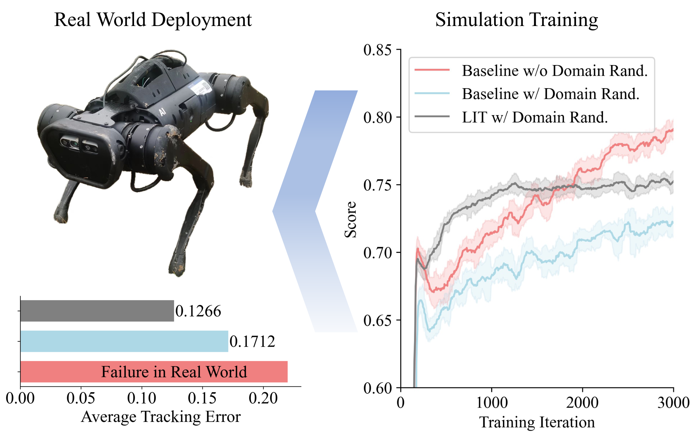
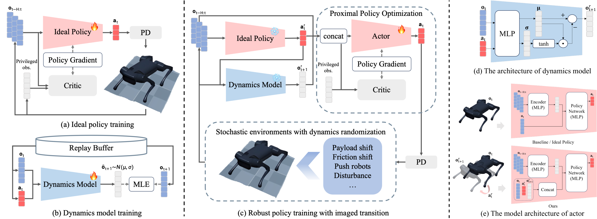
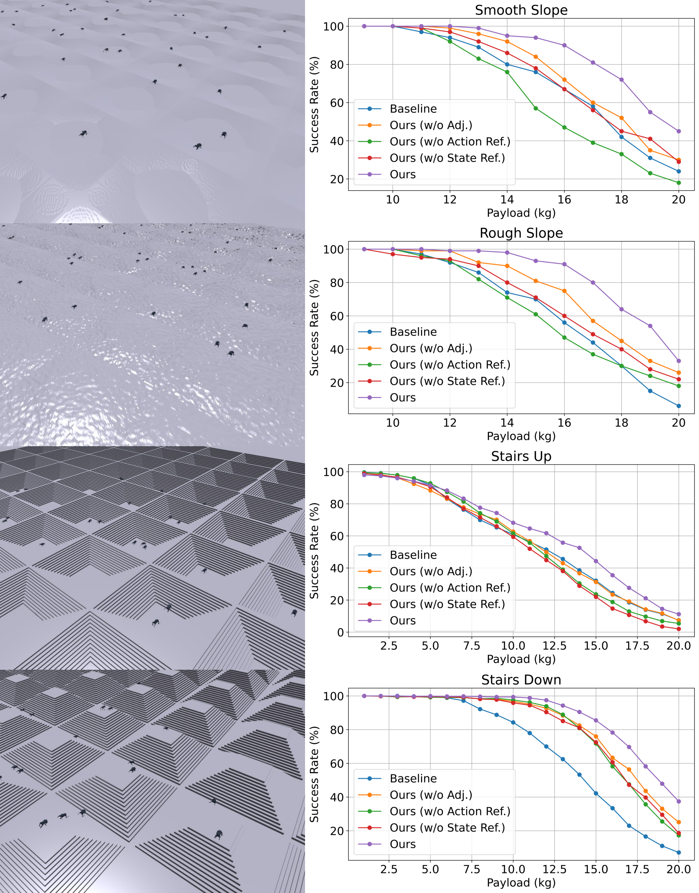
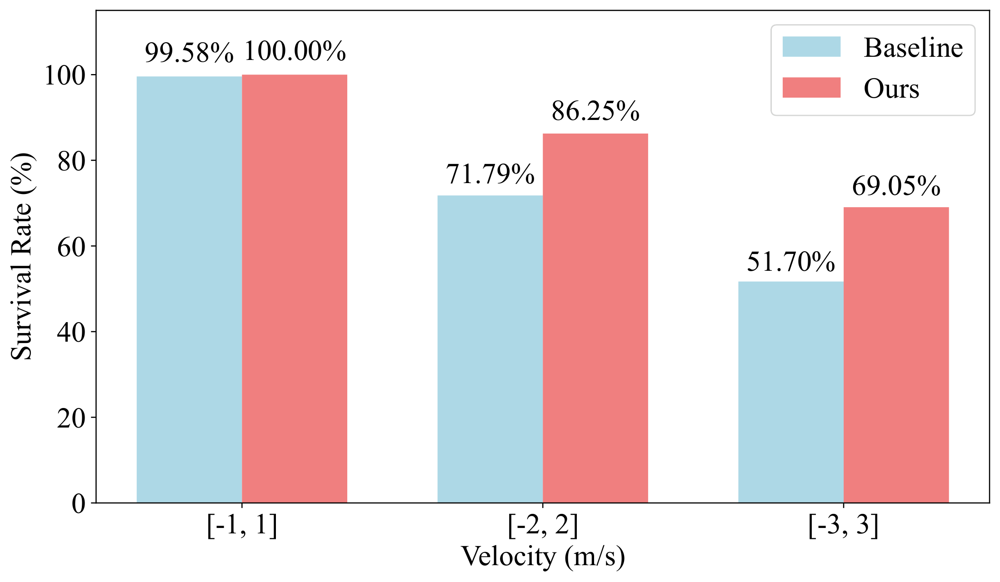
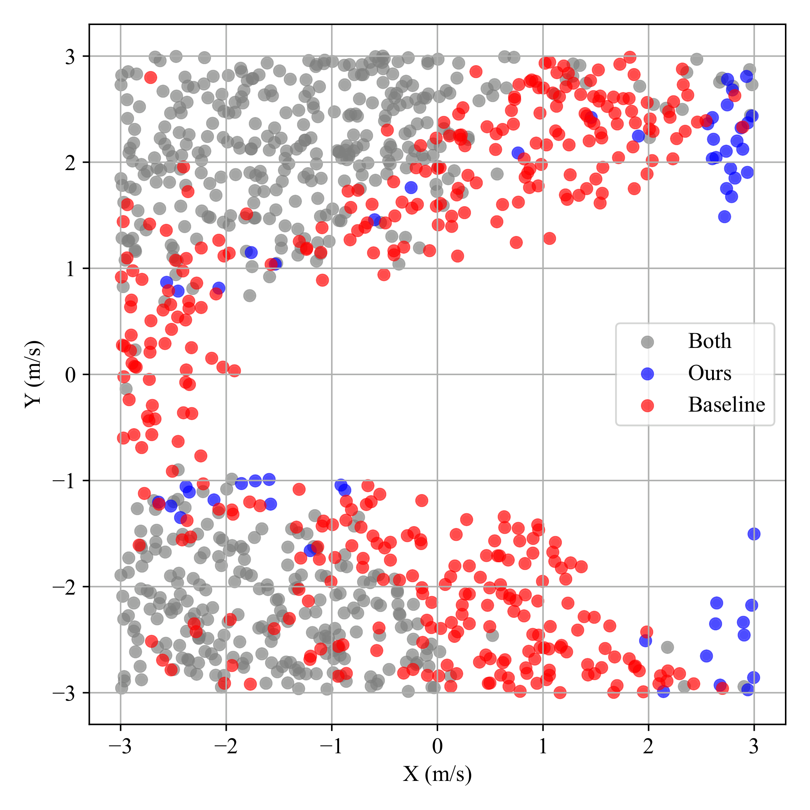
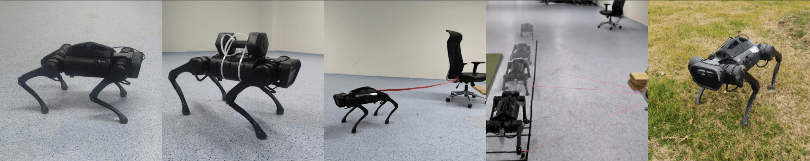
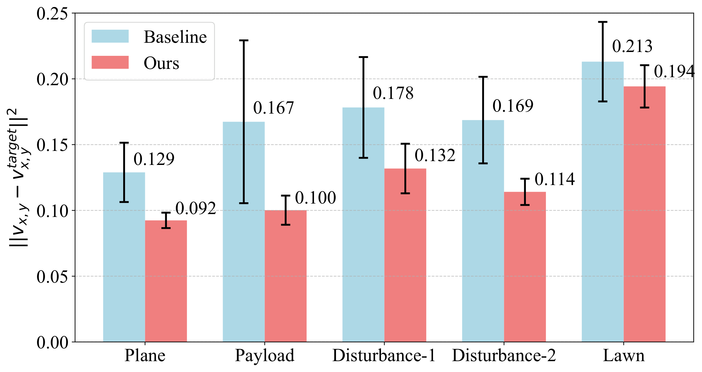
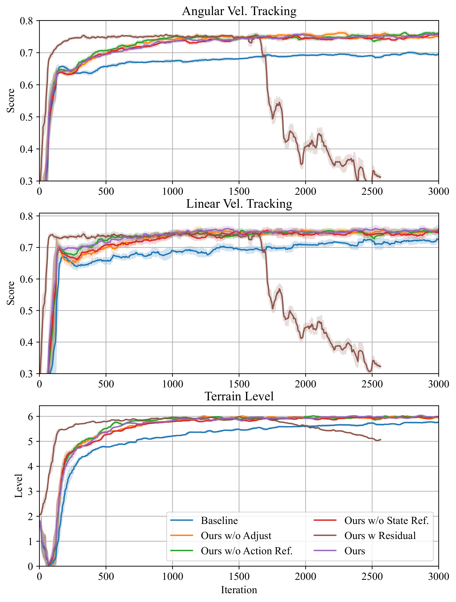

Video
If the embed does not load, open the video on Bilibili.
The video demonstrates LIT in simulation and real-world deployment, including payload shifts, external disturbances, and uneven outdoor terrain.
Abstract
Domain randomization improves sim-to-real robustness for quadrupedal locomotion, but it can also sacrifice optimality and lead to conservative behaviors. We propose LIT (Learning with Imagined Transition), a two-stage reinforcement learning framework that introduces explicit motion references into robust policy learning. An ideal policy and a dynamics model are first trained in a non-perturbative simulator to generate reference actions and imagined next observations. These imagined transitions guide the robust policy under domain randomization, while an uncertainty-based adjustment reduces the influence of unreliable model predictions. Experiments in simulation and on a real Unitree A1 show that LIT improves training efficiency, velocity tracking, and robustness under unseen disturbances.
Motivation
Robust quadrupedal locomotion policies are commonly trained with extensive domain randomization. Although this improves robustness, the learned policy may become overly conservative under nominal or mildly disturbed conditions. LIT addresses this issue by providing explicit reference motions, allowing the policy to preserve desired behavior while adapting to disturbances.

Fig. 1. Proposed LIT has lower tracking error than the baseline. For conventional RL locomotion with domain randomization, robustness trades off optimality. Vector PDF
Method
LIT consists of two stages. First, we train an ideal policy in a fixed, non-randomized simulator and learn a dynamics model that predicts the next observation distribution. The ideal policy provides reference actions, while the dynamics model provides imagined next observations. Second, during robust policy learning under domain randomization, the policy receives the current observation, the reference action, and the imagined next observation as an imagined transition. To handle out-of-distribution states, the predicted observation is adjusted according to model uncertainty (e.g., down-weighting unreliable means when variance is high), reducing the effect of unreliable predictions.

Fig. 2. Framework overview. Left: motion reference learning in fixed dynamics. Middle: policy learning with imagined transition. Right: actor and dynamics model architectures. Vector PDF
Results
1 Command tracking (simulation)
LIT achieves lower linear and angular velocity tracking errors than the baseline across most simulated terrains, including smooth slopes, rough slopes, stairs, and discrete terrains.
| Terrain | Velocity | Baseline | Ours |
|---|---|---|---|
| Smooth slopes | Linear | 0.170 | 0.120 |
| Angular | 0.101 | 0.099 | |
| Rough slopes | Linear | 0.387 | 0.162 |
| Angular | 0.164 | 0.130 | |
| Stairs | Linear | 2.371 | 0.992 |
| Angular | 0.515 | 0.552 | |
| Discrete | Linear | 1.955 | 0.120 |
| Angular | 0.220 | 0.099 |
Table I. Average tracking error in simulator over 1000 trials (same metrics as the paper).
2 Robustness: payload and push
Under unseen payload shifts and external push disturbances, LIT achieves higher survival rates than the baseline. The gains become more pronounced as the disturbance magnitude increases.

Fig. 5. Success rate under various payloads. Vector PDF

Fig. 6. Survival rate under external pushing. Vector PDF

Fig. 7. Fall-resistant visualization with external push. Vector PDF
3 Real-world deployment
We deploy LIT on a Unitree A1 robot across five real-world scenarios: flat ground, payload, two external disturbance settings, and lawn terrain. LIT achieves lower linear velocity tracking errors than the baseline in all scenarios.

Fig. 3. Deployment on real hardware (five scenarios). Raster image from the paper; for print quality see the camera-ready PDF.

Fig. 8. Real-world linear velocity tracking error (mean ± s.e., ten trials). Vector PDF
4 Learning curves
During training, LIT consistently improves normalized velocity tracking scores and terrain progression. The residual-action variant learns quickly at the beginning but later becomes unstable, highlighting the importance of uncertainty-aware adjustment.

Fig. 4. Ablation studies with learning curves (normalized tracking scores and terrain level). Vector PDF
Paper & citation
Download the camera-ready PDF: paper.pdf. arXiv preprint: 2503.10484. The BibTeX below cites the arXiv version; replace with the IEEE proceedings entry once you prefer that citation.
BibTeX
@misc{xiao2025lit,
title = {Learning Robotic Policy with Imagined Transition: Mitigating the Trade-off between Robustness and Optimality},
author = {Xiao, Wei and Lyu, Shangke and Gong, Zhefei and Wang, Renjie and Wang, Donglin},
year = {2025},
eprint = {2503.10484},
archivePrefix = {arXiv},
primaryClass = {cs.RO},
url = {https://arxiv.org/abs/2503.10484}
}